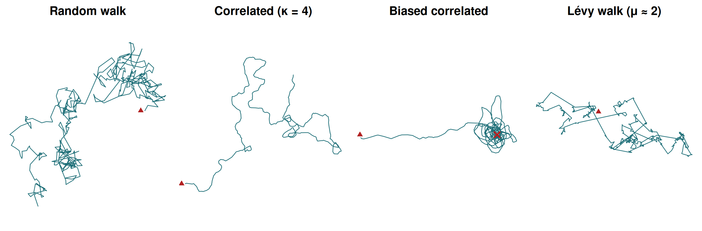
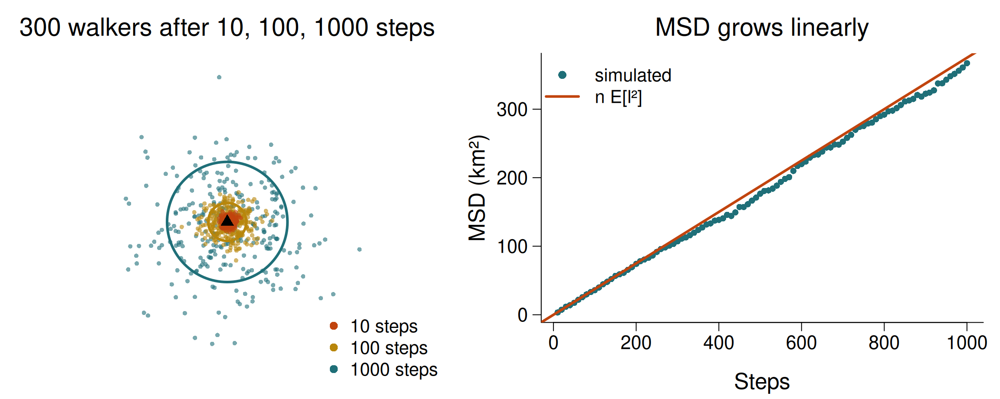
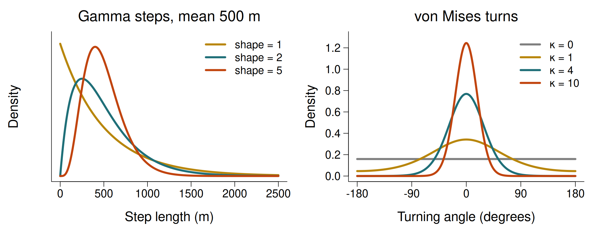
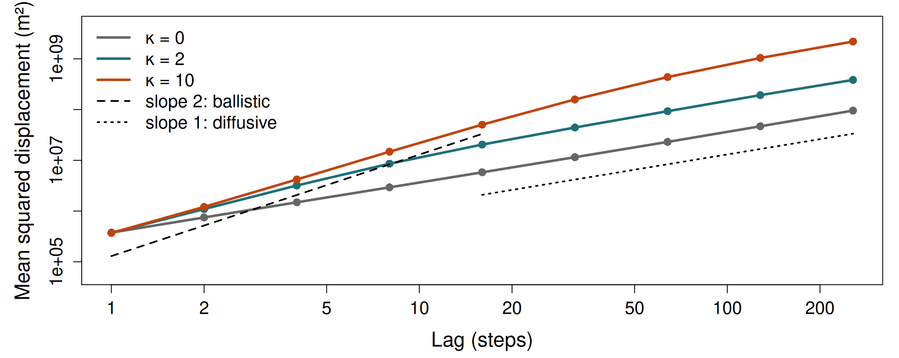
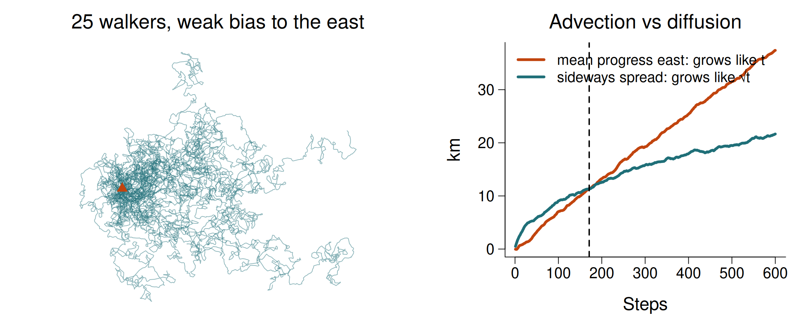
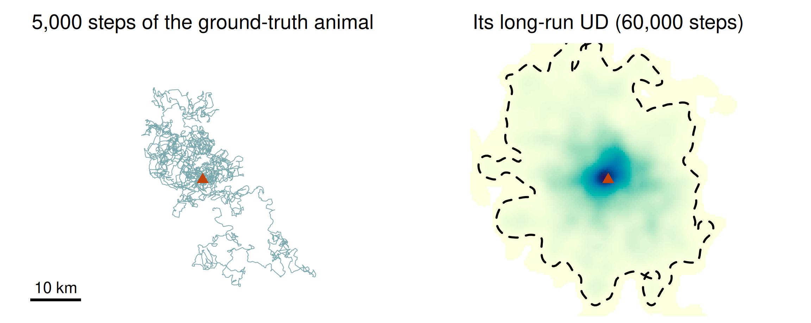
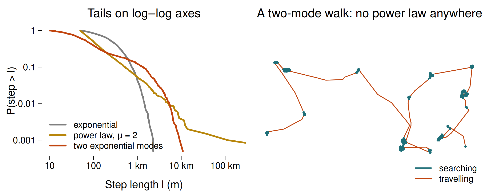
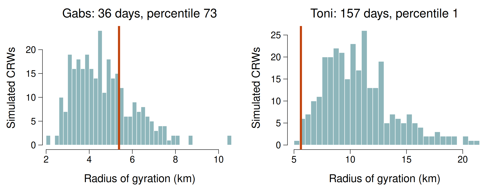

Movement models and simulation
Session 5 — Random walks, correlated and biased random walks, Lévy walks
University of Rome Tor Vergata
2026-10-26
Today
Internal state Motion capacity Navigation capacity External factors Movement path
Random walks are the simplest possible answers to how an animal moves and where it is heading. Their value is not realism — it is that they tell you what to expect if nothing else were going on.
Where we are going
- Why simulate: you cannot rewind an animal, but you can simulate a null
- The uncorrelated random walk and mean squared displacement
- Correlated random walks: persistence, and the scales of movement
- Biased random walks: advection versus diffusion
- Lévy walks — and an honest account of the controversy
- Using simulations as hypothesis tests
Today’s practical builds a simulator from scratch. The same simulated animal becomes the ground truth you test estimators against in Sessions 6 and 7.
1 · Why model movement?
You cannot rewind an animal
- A tracking study observes one realisation of a random process
- To ask “is this unusual?” you need the distribution of what could have happened — and nature will not rerun the experiment
- A movement model is a recipe that generates tracks. Run it a thousand times and you have that distribution
- Compare the real track with the simulated ones: where does it fall?
A random walk is a null model. When the animal departs from it, the departure is the biology: memory, attraction, avoidance, a home range.
Four canonical walks

Figure produced with own R code · simulated data
Same number of steps. Red triangle: start. Cross: the goal of the biased walk.
2 · The uncorrelated random walk
The Brownian baseline
- Each step has a random length and a uniformly random direction, independent of the previous one
- The animal has no memory and no goal
- After \(n\) steps the expected squared distance from the start — the mean squared displacement — is \[\text{MSD}(n) = n\,\mathrm{E}[l^2]\]
- MSD grows linearly with time: \(\text{MSD} = 4Dt\) in two dimensions, with \(D\) the diffusion coefficient
Linear MSD means the typical distance from the start grows only as \(\sqrt{t}\). A random walker four times as long gets only twice as far.
Diffusion, seen from above

Figure produced with own R code · simulated data
Circles: the root of the expected MSD. Ten times more steps, only \(\sqrt{10} \approx 3.2\) times further.
3 · Correlated random walks
Persistence
A correlated random walk (CRW) draws each new heading close to the last:
\[\phi_t = \phi_{t-1} + \theta_t, \qquad \theta_t \sim \text{von Mises}(0, \kappa)\]
- \(\kappa = 0\): turning angles uniform — the uncorrelated walk
- large \(\kappa\): turning angles near zero — nearly straight lines
- Step lengths from a gamma, Weibull or log-normal distribution
- Two parameters for steps, one for turns: the same ingredients as the step selection functions of Session 7 and the hidden Markov models of Session 8
The two ingredients

Figure produced with own R code · theoretical distributions
Every random walk in this session, and every SSF and HMM later, is built from one distribution of each kind.
The scales of movement

Figure produced with own R code · simulated data
Short lags: persistence makes a CRW ballistic (MSD ∝ t²). Long lags: it forgets its direction and becomes diffusive (MSD ∝ t). The crossover is the scale of the animal’s directional memory.
Quiz
You plot MSD against lag on log–log axes for a real track. The slope is ~1.8 at lags up to 3 hours, then ~1.0 up to 10 days, then flattens to ~0. What does each regime suggest?
Slope near 2: ballistic, persistent movement — the animal keeps its heading for a few hours. Slope near 1: diffusive, a correlated random walk has forgotten its direction. Slope near 0: MSD stops growing because the animal cannot get any further from where it was — a home range.
That last regime is what an unbiased random walk can never produce, and it is the starting point of Session 6. One caution: very short lags can also look flat because GPS error sets a floor on the smallest measurable displacement.
4 · Biased random walks
Advection and diffusion
Add a preferred direction — towards a den, a water hole, a breeding ground:
- Biased random walk (BRW): each heading drawn around the bearing to the goal, with no memory of the last heading
- Biased correlated random walk (BCRW): a compromise between the previous heading (persistence) and the bearing to the goal (bias)
- Two processes act at once: advection (drift towards the goal, distance ∝ \(t\)) and diffusion (random spread, distance ∝ \(\sqrt{t}\))
- Over long enough times, advection always wins
Weak bias is invisible over a few steps and decisive over many. That is why orientation mechanisms are so hard to detect in short tracks and so obvious in migrations.
Drift beats spread, eventually

Figure produced with own R code · simulated data
A weak pull towards the east (bias weight 0.1). For the first 170 steps the random spread is larger than the progress; after that, drift wins for good.
Central places
A BCRW whose goal is its own home produces something new: the animal wanders, drifts back, wanders again. It never escapes.
- The track stays within a bounded area: a home range emerges from a simple movement rule
- The long-run spread of positions is a stationary utilisation distribution
- Mechanistic home-range models (Moorcroft & Lewis 2006) build on exactly this idea
In the practical this central-place walker becomes our ground-truth animal: we know its true home range, so in Session 6 we can check which estimator gets it right.
A home range from one rule

Figure produced with own R code · simulated data
No memory, no map, no boundary — only a weak pull towards home. Dashed: the true 95% range, about 800 km², which Session 6 tries to recover.
Quiz
A homing pigeon is simulated as a BCRW with a weak bias towards its loft. Over the first 10 steps its track is indistinguishable from an unbiased CRW. Over 500 steps it heads unmistakably home. Why?
The bias adds a small, consistent component to every step: after \(n\) steps the drift has accumulated in proportion to \(n\). The random component partly cancels itself out, growing only as \(\sqrt{n}\). Eventually the drift must dominate.
Detecting orientation in real animals is hard for exactly this reason: over a short track, even a genuine bias is swamped by noise.
5 · Lévy walks
The Lévy hypothesis
- Step lengths drawn from a power law: \(P(l) \propto l^{-\mu}\), with \(1 < \mu \le 3\)
- No characteristic scale: many short steps, occasional enormous ones
- Viswanathan et al. (1996) reported Lévy flights in wandering albatrosses; Viswanathan et al. (1999) showed that \(\mu \approx 2\) is an optimal search strategy for sparse, randomly placed targets
- A seductive idea: a universal, scale-free rule for foraging
The reversal
- Edwards et al. (2007) reanalysed the albatross data with better records: the long “flights” included time sitting on the water. The Lévy pattern disappeared
- They also showed that log–log regression of histograms, the standard method at the time, is biased; power laws must be fitted by maximum likelihood and compared with alternatives (Clauset et al. 2009)
- Benhamou (2007): an animal switching between two behaviours, each a simple random walk, produces a step-length distribution that a power law fits beautifully
- Lévy-like patterns do appear in some marine predators, but depend on environmental context (Sims et al. 2008; Humphries et al. 2010)
The honest position: a power-law fit is not evidence of a Lévy strategy. Different mechanisms produce indistinguishable step-length distributions.
Two ways to make a heavy tail

Figure produced with own R code · simulated data
Grey: one exponential. Gold: a true power law. Red: two exponential modes, no power law anywhere — yet heavy-tailed enough that a power law beats a single exponential by thousands of AIC units.
Quiz
You fit an exponential and a power law to 2,000 step lengths by maximum likelihood. The power law wins by more than 2,000 AIC units. What have you shown?
In the practical you will generate exactly this result from a mixture of two exponential distributions — a short-step mode and a long-step mode, and no power law anywhere. The power law wins decisively anyway.
A fit tells you about the shape of a distribution. It cannot tell you which process generated it. To argue for a Lévy strategy you would need to rule out composite walks — for instance by showing that the long steps do not belong to a distinct behavioural state (Session 8).
6 · Simulation as a hypothesis test
The recipe
- Choose a statistic that captures your question — net displacement, radius of gyration, time to reach water
- Choose a null process that lacks the mechanism you are testing — a CRW with the animal’s own step and turn distributions, but no memory
- Simulate it many times; compute the statistic each time
- Locate the observed value in the simulated distribution
The null must match the animal in everything except the mechanism. A null with the wrong step lengths is a straw man, and rejecting it proves nothing.
The recipe, applied

Figure produced with own R code · data: Kruger buffalo, Getz et al. (Movebank); null model simulated
Grey-green: 300 CRWs with the buffalo’s own steps and turns. Red line: the buffalo. Only the longer track is clearly more confined than its null.
Quiz
You test whether a buffalo is range-resident by comparing its radius of gyration with 300 CRWs built from its own steps and turns. For a 36-day track it sits at the 73rd percentile; for a 157-day track of another buffalo, the 1st. What is the most important lesson?
These are real results for the Kruger buffalo. Over a month, a resident and a random walker cover similar ground: the resident has not yet had time to hit the edges of its range. Only over months does the random walker keep spreading while the resident stays put.
More simulations only sharpen the null distribution; they do not add information about the animal. This is the tracking duration versus occupation timescale problem — and exactly what the variogram in Session 6 diagnoses.
Today’s practical
- Write a correlated random walk simulator from scratch
- Vary κ and watch straightness emerge
- Mean squared displacement: find the ballistic–diffusive crossover
- Add a bias: simulate homing, and a central-place animal
- Exponential versus power law — discover the identifiability problem
- Is a real buffalo range-resident? Test it against a simulated null
Recap
- Simulation replaces the replication nature will not give you
- Uncorrelated walk: MSD ∝ t. CRW: ballistic at short scales, diffusive at long
- Bias adds drift, which always wins eventually; a bias towards home creates a home range
- Power-law step lengths are not evidence of a Lévy strategy
- A simulation null must match the animal in everything but the mechanism — and has power only if the track is long enough
Before Session 6
- Fleming et al. (2015), Ecology 96:1182 — autocorrelated KDE
- Make sure
library(ctmm)andlibrary(adehabitatHR)both load